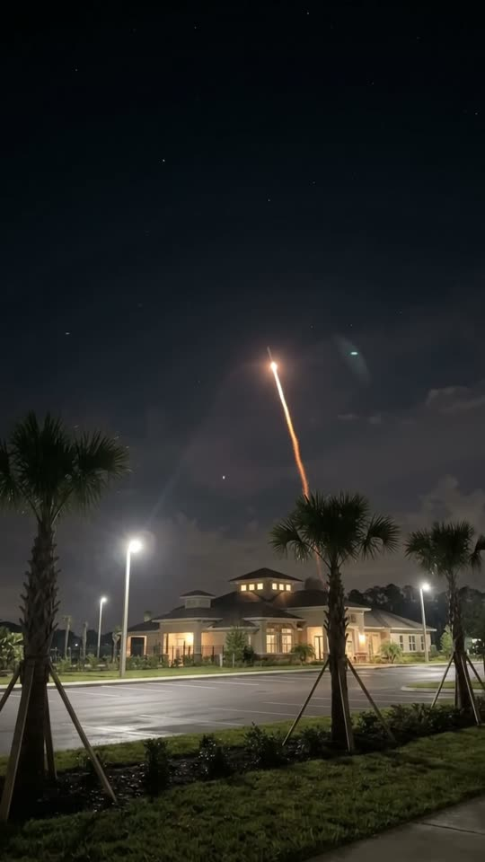
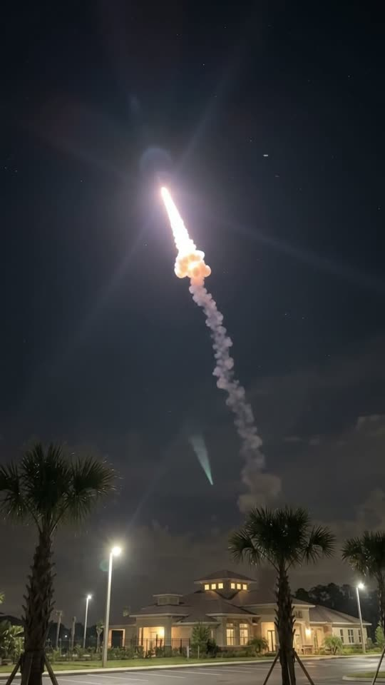
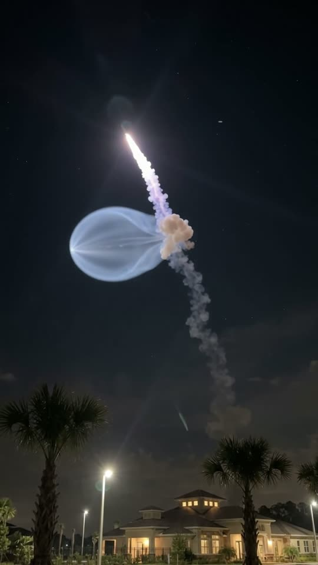
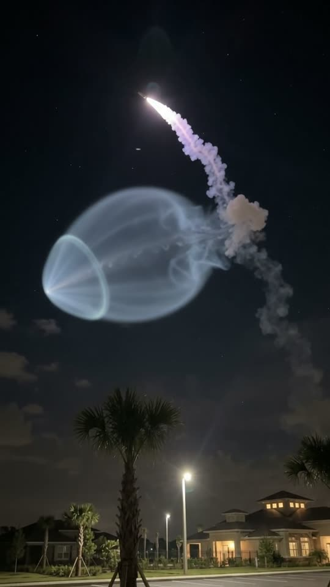

Free prompt pack
One rocket.One jellyfish.
A rocket climbs out from behind a quiet Florida suburb, catches the sunlight up high and blooms into a glowing jellyfish over the palms. One still image and one prompt, from launch to bloom.
Both prompts, in the order I ran them. Slide each one up to launch. Tap the sky to launch your own.
The first frame
The sky is empty on purpose. This image is frame one: the palms, the clubhouse and the street lamps, and one tiny point of flame just off the treeline. Nothing else in the sky yet.
Watch out
Keep the plume out of this image. My first try had the jellyfish already in it, and the video started finished and barely grew.

The prompt 111 words
Real handheld night photo looking up from a sidewalk in a new Florida housing development. In the lower third, young sabal palm trees with wooden support stakes stand silhouetted over a lawn, a wet parking lot and a large two-story clubhouse with hipped roofs, warm windows and tall white street lamps. Above, a wide dark navy night sky with a few faint stars and thin dark clouds. Just above the treeline beyond the clubhouse, on the right, a rocket launch far away: a tiny orange-white point of flame climbing at a steep angle, trailing a thin glowing orange line of exhaust down to the treeline. Night-mode noise, lamps blooming, natural colour.
Launch to bloom
Ten seconds, from a spark to a jellyfish. Add the image as the reference, set 10 s, 9:16, 720p and audio on, and paste the prompt whole.
- 0–3.0 sthe flame climbs out of the trees
- 3.0–4.5 sit hits the sunlight and puffs
- 4.5–7.5 sthe blue bubble swells
- 7.5–10 sa glowing bell over the palms
Watch out
Ask for a small puff, never a storm cloud, and keep the sky dark around it. A sky that lights up all at once is where the model cuts.
Fragments



The prompt 1219 words
FORMAT Real handheld night video, seen as the finished exported video file: the full picture edge to edge, nothing on top of it. Whatever records the picture is never in frame. One continuous take in real time, no cuts. Vertical frame. The video runs at 24 fps. No frame is repeated. Real time, 1x speed, never slow motion, never a timelapse. SCENE Someone standing on a sidewalk in a new Florida housing development at night films a rocket launch far away, from the very beginning: a tiny point of flame climbs out from behind the trees, rises high into the sky and, once it is high enough to catch the sunlight, its exhaust blooms into a strange glowing shape that recalls a giant jellyfish, made only of light and gas. The rocket is already climbing in the first frame, and the sky above it is still empty. The take ends on the glowing shape over the palm trees. REFERENCE IMAGE Use it for the palms, the lawn, the parking lot, the clubhouse, the street lamps, the night sky and the rocket's point of flame and its trail. Everything on the ground matches it exactly, zero drift. The sky changes as described below. THE ROCKET AND ITS PLUME The rocket is never seen as a body: only a tiny point of light, far away. 1. The climb: an orange-white point of flame that flickers, trailing a thin glowing orange line of exhaust that fades to grey smoke behind it. 2. The puff: high up, where the sunlight still reaches, a small soft puff of exhaust blooms around the point, lit cream and pale blue with a salmon-orange glow at its base, thin and see-through at its edges. 3. The bubble: out of the left side of the puff, a smooth translucent teardrop bubble of pale-blue light swells around the point, which is now brilliant white. It is rounded at its left end and narrows into the puff at its right end, glows from inside, and faint stars show through its edges; faint straight rays of light fan out from the white point to the left. The point keeps crawling slowly to the left and the bubble keeps swelling around it. The part of the trail high up in the sunlight glows pale violet; the part low near the trees stays dark grey. LOCATION MAP The camera is on the sidewalk at the edge of a lawn, at chest height, tilted up about 25 degrees. Lower 38% of the frame: young sabal palm trees with wooden support stakes, their crowns silhouetted against the sky between y 58% and 70%; behind them, a wet parking lot and a large two-story clubhouse with hipped roofs, warm windows and tall white street lamps, along y 68-82%. Upper 60%: the dark navy night sky. The rocket rises from behind the trees beyond the clubhouse, at frame-right, and climbs on a steep curve up and to the left into the upper sky. FIRST FRAME Already happening: the point of flame at x 74%, y 50%, just above the treeline beyond the clubhouse, climbing; its thin orange trail running down to the treeline at x 77%, y 60%; the rest of the sky dark navy and empty, a few faint stars; the palm crowns at y 58-70%; the clubhouse and the lamps along the bottom. Instant read: a rocket is going up over a quiet suburb at night. No delayed reveal. CAMERA Handheld at chest height, almost still: the small natural sway of a hand holding it up, and a slow tilt up of about 8 degrees during the first 4 seconds, following the point, then it holds. It never zooms, never cuts, never pans down to the ground, never turns to the people. The palm crowns stay in the bottom third from the first frame to the last. ACTION TIMING 0–3.0 s — The point of flame climbs fast on a steep curve up and to the left, from x 74%, y 50% to x 52%, y 26%, its orange trail stretching behind it down to the trees. 3.0–4.5 s — Up high it catches the sunlight: the flame turns brilliant white, the high part of the trail glows pale violet, and a small soft puff of exhaust blooms around it, cream and pale blue with a salmon glow at its base. 4.5–7.5 s — Out of the left side of the puff, the translucent pale-blue bubble swells around the white point as it crawls slowly left: first milky and small, then glowing blue and wider than the puff, faint rays fanning out from the point. 7.5–10 s — The bubble has grown into a large glowing bell, three times the size of the puff, from x 18% to x 70%, y 12% to 36%, still swelling slowly; the white point keeps crawling left. Hold to the last frame. PHYSICS AND SCALE Very far away and enormous: the climb is fast, but the point stays tiny; once it is high, everything moves slowly and smoothly, like a slow sunrise. It only climbs, glows and grows: nothing explodes, nothing falls, nothing flashes. The puff stays small and soft, never a big storm cloud. The palm fronds stir a little in a light breeze. The ground stays still. Nothing morphs: one point of flame, one trail, one puff, one bubble. NO FULL-FRAME EVENTS The plume never fills the frame and never lights up the whole sky: the sky around it stays dark navy in every frame, and the palms and the lamps stay visible from the first frame to the last. LIGHTING Night on the ground: warm and white street lamps, the clubhouse windows, the wet parking lot reflecting them, the palms almost black against the sky. The rocket's flame is a small orange point and never lights the ground. High above, the plume is lit by sunlight from below the horizon: glowing icy blue and cream, brighter than anything on the ground, with a salmon-orange glow at the base of the puff. AUDIO No music, no score, no narration, no subtitles. A Florida night: crickets and tree frogs, a distant highway hum. From 2 s, a deep distant rumble like faraway thunder, rolling and steady: the launch heard from many miles away. Exactly two spoken lines, quiet, from behind the camera: at 5 s a man whispers "What... is that?"; at 8 s a woman says, half laughing and half scared, "Bro, is this the end of the world?". Nobody else speaks. LOOK Real handheld night footage, seen as the finished exported file: night-mode noise in the dark sky, street lamps blooming, slight softness, natural colour, no colour grade, no film grain, no lens flare, no cinematic look. No camera app interface: no shutter button, no gallery thumbnail, no record button, no icons, no timer, no recording dot, no frame lines. POSITIVE LOCKS It is a rocket launch and its exhaust plume and nothing else: not a UFO, not a spaceship, not a comet, not a portal, not an explosion, not fireworks, not an aurora, not a storm cloud, no tentacles. No visible rocket body. No captions, no subtitles, no on-screen text, no watermark, no logos, nothing on top of the picture. ONE ROCKET. ONE PLUME. ONE SKY. NO CUTS. NO INTERFACE. NO SLOW MOTION. NO MUSIC.
Rule 01
Leave the sky empty
Whatever is in your first frame is already done. To watch something form, the image only gets its cause: a rocket just off the ground.
Rule 02
Give the final size
Say where it ends up in the frame, like x 18 to 70%. Just saying it grows gets you a shape that barely moves.
Rule 03
Close the easy doors
Light and gas, not a UFO, not a spaceship, not a comet, not a storm cloud. Name what the model would pick and rule it out.
That's the whole build
Now go launchyour own sky.
If yours works, send it over. I read every DM and the good ones end up on the account.
@martiiifons